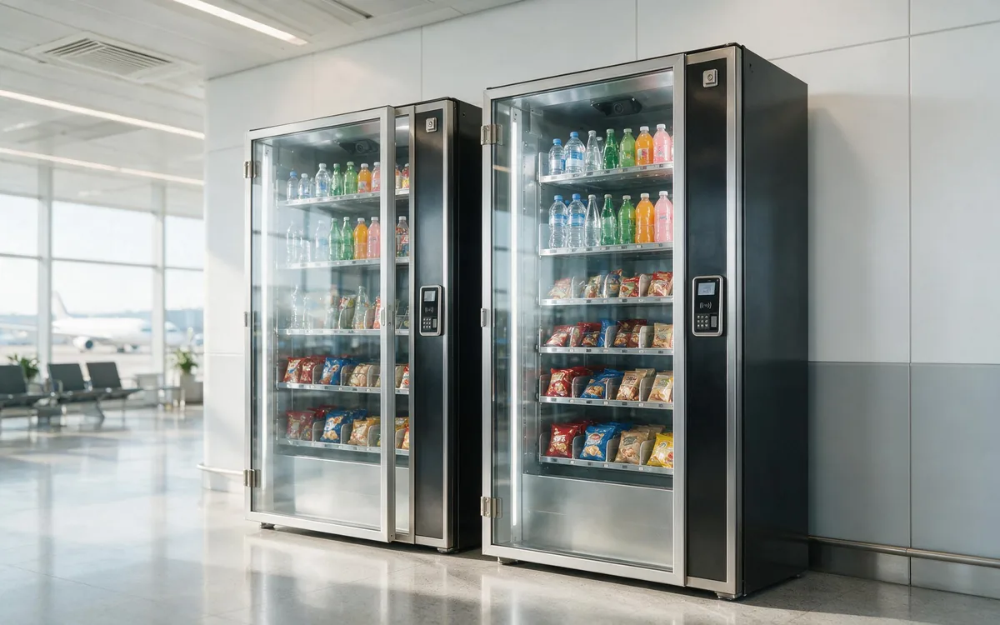

AI Vending for Airports

The scenario
Airports run 24/7, but concessions do not. Shops and restaurants close late in the evening, while flights keep departing and arriving through the night. Add delays — which happen constantly — and you have a captive audience with time to spend and nowhere to buy. An AI vending unit placed in a gate area, waiting lounge, or baggage claim gives travelers a self-service option that is always open, and it captures revenue in the exact windows when staffed retail is dark.
Airports are high-traffic, high-stress, and security-constrained. Buyers are in a hurry, often tired, and unusually willing to pay for convenience — a traveler who forgot a charger will pay a large premium for one at the gate. The economics are strong, but the operating constraints (security zones, concession agreements, power and network rules) mean placement and product rules matter more than in almost any other venue.
Who you are serving
- Travelers. The core buyers. They are time-pressured, travel-light, and buy for the journey: water at the gate, snacks for the flight, a charger they forgot.
- Delayed passengers. A delay converts idle time into purchases — food, drinks, and entertainment. Delays are one of the unit’s biggest revenue drivers.
- Red-eye and early-morning flyers. The 11 PM–6 AM crowd has almost no staffed retail options.
- Airport and airline staff. Ground crew, security, and retail staff buy throughout the day, adding reliable volume.
The pain points are universal: no staffed retail after hours, time pressure at every step, and the "I forgot it" moment at the gate. Each maps to a purchase the unit can capture automatically.
Why AI vending fits
- Airports never close, and demand follows flights — including red-eyes and delays that fall outside staffed retail hours.
- Travelers are captive, time-poor, and willing to pay premium prices for convenience.
- A unit needs no staff and no queue, which fits the terminal’s pace perfectly.
- Dwell time — waiting at the gate — is one of the strongest purchase drivers in retail.
- Enclosed cabinets with automatic billing work well in high-traffic, security-monitored spaces.
Peak buying windows
| Window | What travelers buy | Why it happens |
|---|---|---|
| Morning departure rush (5–9 AM) | Coffee, breakfast items, water | Early flights and long security lines create demand. |
| Midday connections | Snacks, drinks | Travelers grab something between flights. |
| Delay events (anytime) | Food, drinks, chargers | The biggest opportunistic spike — idle time plus frustration. |
| Red-eye hours (11 PM–6 AM) | Snacks, water, comfort items | Every staffed concession is closed. |
Where to place the unit
Airport placement is governed by two things: security zones and concession agreements. Each zone has different rules and different demand:
| Location | Why it works | Best stocked with |
|---|---|---|
| Gate areas (post-security) | The strongest location — captive travelers with dwell time and no competition after hours. | Fresh food, water, premium snacks, chargers. |
| Waiting lounges and hold rooms | High dwell time and premium demand. | Premium snacks, chargers, comfort items. |
| Baggage claim | Water and snacks for the ride home — high volume, lower basket size. | Water, snacks, drinks. |
| Pre-security & arrivals (landside) | Serves arriving passengers and meeters/greeters; product limits differ from airside. | Travel-size toiletries, single-serve snacks, tech essentials. |
| Staff areas | Airport and airline staff are a reliable, under-served audience. | Coffee, snacks, hydration. |
How to choose products for this venue
Airport product selection is defined by security limits and by the two distinct zones. The rules are simple: pre-security focuses on TSA-compliant items (travel-size toiletries under 100 ml / 3.4 oz, single-serve snacks, tech essentials); post-security has no liquid restrictions and holds the premium demand.
| Layer | Role in the unit | Example items | Margin profile |
|---|---|---|---|
| Hydration & caffeine | Traffic driver. Water is the #1 airport purchase; it drives daily, recurring demand. | Post-security: premium bottled water (750 ml–1 L), cold-brew cans, energy drinks, sodas. Pre-security: travel-size drinks where permitted. | Low to mid, high frequency. |
| Fresh food & meal replacements | Profit driver. Delayed and waiting travelers pay $8–14 for a fresh meal. | Sandwiches, protein boxes, yogurt parfaits, premium snacks, local specialty treats. | Premium. |
| Travel essentials | Margin driver. Travelers will pay 5–8x cost for a forgotten charger at the gate. | Chargers, universal adapters, power banks, earbuds, eye masks, earplugs, travel toiletries. | Highest in the terminal. |
Keep the mix compact and reorder-prone: airport foot traffic is enormous, and the best SKUs sell out fast.
How to arrange the shelves
Travelers scan and decide in seconds. The display must be readable under time pressure:
| Shelf zone | What goes there | Why |
|---|---|---|
| Top shelves | Chargers, adapters, earbuds, eye masks | The eye-level "forgot it" zone — a traveler who needs a charger finds it in one glance. |
| Middle shelves (eye level) | Fresh meals, protein boxes, premium snacks, local specialties | Face fresh food forward — it signals "you do not need a restaurant." |
| Bottom shelves | Large water bottles, sodas, sparkling water | The heavy staples travelers reach for. |
Running the unit well
- Restock rhythm: terminal units sell fast and need frequent attention — often daily. Restock around flight schedules, not office hours.
- Payments: contactless cards and mobile wallets, including international cards, are essential.
- Security compliance: keep pre-security stock within liquid limits and label it clearly. A unit that sells non-compliant items gets pulled fast.
- Concession alignment: work within the airport’s concession model. Where airlines or lounges want to offer guest credits (for example, delay compensation or lounge perks), those can be delivered as account credits through the operator’s platform — travelers tap and the credit applies.
- Data: use sales data across terminal locations to confirm what each zone sells — gates sell fresh food and water, lounges sell premium snacks and chargers — and stock each unit accordingly.
What success looks like
Airport units are volume machines with premium pricing, so revenue per unit can be high — but approval complexity is the real constraint. Track:
| Metric | What it signals |
|---|---|
| Transactions per day | Gate-area units can clear several hundred on busy days. |
| Basket size | The delay window should show higher baskets as travelers stock up. |
| Stockout rate | The #1 risk in a terminal is selling out of water or chargers at the worst moment. |
| Zone mix | Fresh food and water at gates, premium items in lounges. |
| Approval health | Compliance with security and concession rules is a metric in itself — losing the placement is the biggest possible failure. |
Common mistakes to avoid
- Ignoring security zones. Selling non-compliant liquids pre-security gets the unit pulled.
- Under-stocking high-turnover items. Running out of water or chargers at a gate is a direct, visible revenue loss.
- Treating gates and lounges the same. Different zones need different mixes; one-size-fits-all underperforms.
- Skipping the concession process. Trying to bypass airport approval rarely ends well and can lose the location permanently.
- Forgetting the delay window. Delays are the unit’s biggest opportunistic revenue source — stock for them and they pay for the placement.
Frequently asked questions
Can vending units be placed post-security?
Yes, but it requires a concession agreement and security compliance. Landside (pre-security) locations such as arrivals and staff areas are easier to approve and still perform well.
What products can be sold pre-security?
Travel-size toiletries under 100 ml / 3.4 oz, single-serve snacks, and tech essentials. Large liquids must be airside-only.
How do delayed passengers use the unit?
They buy food, drinks, and chargers during the wait. Airlines or lounges can also issue credits through the operator’s platform so a traveler taps and the credit applies.
Who services terminal units?
The operator handles restocking and maintenance, coordinated with airport facilities for power, network, and access. Concession rules govern placement.
What sells best at an airport?
Water and premium coffee drive traffic; fresh meals, protein boxes, and local treats drive revenue; chargers, adapters, and travel toiletries drive the highest margins.